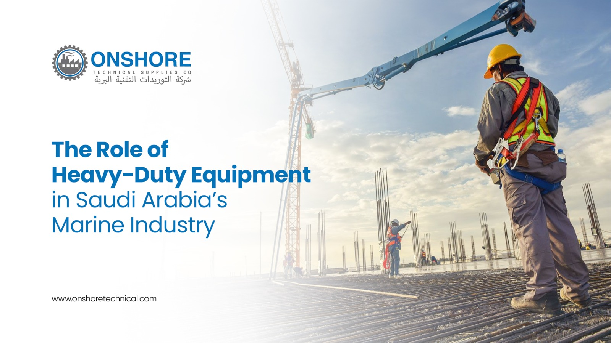

Why Saudi Arabia’s Marine Industry Relies on Heavy-Duty Industrial Equipment

Saudi Arabia’s marine industry is rapidly expanding, driven by increasing offshore projects, port development, oil and gas operations, and international trade activities. From shipyards and offshore rigs to commercial ports and marine maintenance facilities, the industry depends heavily on durable and high-performance industrial equipment to maintain safety, efficiency, and operational reliability.
At Onshore Technical Supplies Est, we understand the unique demands of Saudi Arabia’s marine sector and provide reliable industrial solutions designed for long-lasting performance in challenging environments.
The Growing Importance of Saudi Arabia’s Marine Industry
Saudi Arabia’s strategic location along the Red Sea and the Arabian Gulf makes it a major hub for global shipping and offshore energy operations. With initiatives under Vision 2030, the Kingdom is investing heavily in maritime infrastructure, logistics, shipbuilding, and offshore development projects.
As marine operations grow more advanced, the demand for industrial equipment in Saudi Arabia continues to increase. Marine companies require dependable tools and machinery that improve productivity while ensuring compliance with international safety standards.
Why Heavy-Duty Equipment Matters in Marine Operations
Marine environments are among the toughest industrial settings in the world. Saltwater exposure, humidity, corrosion, high winds, and heavy operational loads can quickly damage low-quality equipment.
Heavy-duty industrial equipment is essential because it offers:
1. Corrosion Resistance
Marine equipment constantly faces exposure to saltwater and moisture, which can lead to rust and material degradation. Heavy-duty industrial tools are manufactured using corrosion-resistant materials and protective coatings that improve durability and extend equipment lifespan.
This is especially important for offshore platforms, shipyards, and dockside operations where equipment operates continuously.
2. Enhanced Safety Standards
Safety is one of the highest priorities in marine and offshore industries. Heavy lifting operations, confined spaces, welding work, and cargo handling require equipment that meets strict safety regulations.
Using reliable industrial safety equipment reduces workplace accidents and helps companies maintain compliance with international marine safety standards.
Onshore Technical Supplies Est provides high-quality safety solutions designed specifically for demanding marine environments.
3. High Load Capacity
Marine projects often involve lifting heavy materials, transporting large cargo, and handling industrial components. Heavy-duty lifting equipment such as chain blocks, wire ropes, slings, hydraulic tools, and lifting clamps are critical for smooth and safe operations.
Industrial-grade equipment minimizes downtime and improves operational efficiency.
4. Reliability in Harsh Conditions
Marine operations cannot afford equipment failures. Delays caused by malfunctioning tools or machinery can lead to major financial losses and project disruptions.
Heavy-duty industrial equipment is engineered for continuous use under extreme conditions, making it ideal for offshore and maritime industries in Saudi Arabia.
Essential Industrial Equipment Used in the Marine Industry
The marine sector depends on a wide range of industrial tools and equipment to maintain daily operations.
- Welding and Fabrication Equipment: Shipbuilding and offshore repairs require advanced welding solutions capable of delivering precision and durability. Marine-grade welding equipment supports structural integrity and ensures reliable fabrication work.
- Lifting and Material Handling Equipment: Heavy lifting operations are common in ports, shipyards, and offshore facilities. Equipment such as hoists, cranes, lifting slings, shackles, and hydraulic jacks help improve safety and efficiency.
- Power Tools and Industrial Hardware: Marine maintenance teams rely on industrial power tools, cutting equipment, fastening tools, and hardware products to complete repair and installation tasks quickly and effectively.
- Personal Protective Equipment (PPE): Safety gear such as helmets, gloves, harnesses, protective clothing, and respiratory protection is essential for marine workers operating in hazardous environments.
- Abrasives and Surface Preparation Tools: Marine structures require regular maintenance and corrosion control. Abrasive tools and surface treatment equipment play a major role in preparing surfaces for painting, coating, and repair.
The Role of Quality Suppliers in Marine Operations
Choosing the right industrial equipment supplier is just as important as selecting the equipment itself. Marine companies require suppliers that understand industry requirements, safety standards, and operational challenges.
Our team understands the operational demands of shipyards, offshore projects, and marine maintenance facilities. We supply durable industrial tools and equipment designed to perform in high-pressure environments while meeting international quality standards.
Why Marine Companies Choose Onshore Technical Supplies Est
Marine and offshore industries require more than just equipment — they need dependable support, product reliability, and technical expertise.
At Onshore Technical Supplies Est, we provide:
- Heavy-duty industrial equipment for marine applications
- Reliable lifting and safety solutions
- High-quality welding and fabrication tools
- Durable products built for harsh environments
- Expert technical assistance
- Industrial solutions tailored to offshore operations
Our commitment to quality and customer satisfaction makes us a preferred industrial equipment supplier for marine businesses across Saudi Arabia.
Conclusion
Saudi Arabia’s marine industry continues to grow as the Kingdom strengthens its position in global trade, offshore energy, and maritime infrastructure development. To support this expansion, companies need heavy-duty industrial equipment capable of handling demanding marine environments safely and efficiently.
With extensive industry knowledge and a commitment to quality, Onshore Technical Supplies Est delivers trusted industrial solutions that help marine businesses operate with confidence, safety, and efficiency.
Frequently Asked Questions (FAQ)
Heavy-duty industrial equipment is designed to withstand harsh marine conditions such as saltwater exposure, corrosion, heavy loads, and continuous operational use.
Marine industries commonly use lifting equipment, welding machines, industrial power tools, safety gear, abrasives, hydraulic tools, and material handling systems.
Reliable industrial equipment reduces operational risks, improves handling efficiency, and helps companies comply with marine safety standards and regulations.
Marine environments contain high levels of moisture and salt, which can quickly damage standard equipment. Corrosion-resistant equipment lasts longer and performs more reliably.
Onshore Technical Supplies Est provides high-quality industrial equipment, technical expertise, and reliable support tailored to the needs of Saudi Arabia’s marine and offshore industries.